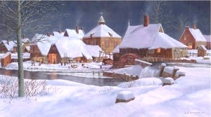
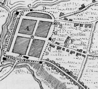
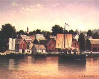

by
Stefan Bielinski
The village and then town of Schenectady ("beyond the Pines") emerged from a patent to farm on the Great Flats of the Mohawk River originally granted by the Dutch in 1661. It was located beyond the western border of Rensselaerswyck.
Over the next decade, Schenectady was settled mostly by former Beverwyck residents who sought less competitive opportunities farther away from the community that became Albany in 1664. The complete list of patentees is the subject of some discussion. Union College librarian and historian Jonathan Pearson has compiled a useful list that can serve as a comprehensive starting point.
Over the next twenty-five years, the original patentees and their descendants built a stockaded town on the south side of the Mohawk River about eighteen miles west of Albany.  By 1680, a Dutch Reformed church had become established in the community. As part of his initiative to "royalize" the colony, Governor Thomas Dongan granted Schenectady a town patent in 1684 and a community economy began to develop on the Albany model but with a more direct connection to the farms of its immediate environs. Land north of the Mohawk also was deeded and settled. It would be known as "Scotia" (today's village of Scotia in the town of Glenville - both commemorating the original landholding families).
All this came crashing down when French and Indian raiders destroyed the town on the night of February 9, 1690. The settlement was in shambles with its people killed, captured, or sent fleeing as refugees to the safety of the Albany fort. The Schermerhorns and others temporarily set up homes in Albany. The so-called "Schenectady Massacre" still is one of the "great," mythical events of the community's heritage and has been embellished in print, song, and tradition!
The community reassembled and began to rebuild during the early eighteenth century. With the onset of three decades of peace beginning in 1713, Schenectady began to grow again - its population fueled by the natural increase of the descendants of the original patentees and a number of newcomers as well.
With the establishment of Oswego during the 1720s, Schenectady lost much of its frontier character and developed as a farm and market town but also as a regional center serving a growing Mohawk Valley hinterland. It was connected to Albany by kinship among its pioneer families and overland via the King's Highway, a rudimentary but well-travelled road through the Pine Barrens.
Like Albany, Schenectady experienced its first significant contact with the larger American scene during the Seven Years War when it became a major staging area and was overwhelmed by British and provincial soldiers - all of whom expected to be boarded and fed by the inhabitants. Despite its proximity to the influence of Sir William Johnson, Schenectady's native leaders were left growing doubts regarding the validity of a continued connection to the royal establishment!
{kind=link}
Following the war, the community became a point of departure for new settlers heading west and also a transfer point for regional trade. In 1764, Schenectady's growth and development were recognized when it was accorded borough status by the royal government - in practice, an underdeveloped form of government that was to include a mayor and alderman. The text of the "bond" posted by borough officials in 1766 is now online. Heading the list of borough fathers was John Sanders - one of a number of Schenectady people with roots deep into the Albany community as well. Throughout the eighteenth century, notables including Daniel Campbell appeared on the rolls of the city of Albany as well - thus technically qualifying them for inclusion. These individuals are profiled by us (but concentrating on their Albany context) while acknowledging that they primarily are identified with the history of Schenectady.
During the War for Independence, Schenectady supported the American cause in a effort led by its Committee of Safety - an arm of the Albany County Committee of Correspondence . . ..The Second Regiment of the Albany County Militia (both officers and soldiers) was composed chiefly of Schenectady residents.
 By 1790, Schenectady's overall population had grown to more than 4,000 with 3,472 people living south of the Mohawk. With the opening of the frontier to settlement, people streamed through Schenectady on their way west.
In 1798, the City of Schenectady was chartered by the State of New York. The following year, the street grid was laid out and the original streets renamed! The census breakdowns for the city and its hinterland in 1800 are now online. At that time, Schenectady was composed of four wards and two adjacent towns (Duanesburg and Princetown). Schenectady County was formed from Albany in 1809. At that time, the town of Niskayuna was established separately.

The purpose of this page is to explain Schenectady in its Albany context - in other words, Schenectady's founding, growth, and development in relation to its older and more advantaged forebear - the city of Albany! However, the resources cited below could make an "old dorp digression" mighty tempting!
Resources: Schenectady is blessed with some very useful online historical resources. First, visit the new homepage of the Schenectady County Historical Society, a multifaceted historical program. Visit the office of the current Schenectady city and county historian. See also the substantial online historical presentation from The Stockade Association.
Sources: Seminal work on the history of Schenectady was prepared by Jonathan Pearson. Much historical material now appears on the Internet. Chief among these resources issue from the Schenectady Public Library! Pearson's A History of the Schenectady Patent in the Dutch and English Times being Contributions toward a History of the Lower Mohawk Valley (1883), is a compendious but essential primer. See also, the work of Thomas E. Burke and Edward H. Tebbenhoff ( article presented in the Journal of Social History, volume 18 (Summer 1985), pp. 567-85 and his doctoral dissertation at the University of Minnesota entitled "The Momentum of Tradition: Dutch Society and Identity in Schenectady, 1660-1790.” Willis T. Hanson's A History of Schenectady during the Revolution is now available online. Critical perspective on Schenectady society is found in Facing the King of Terrors: Death and Society in an American Community, 1750-1900, by Robert V. Wells (Cambridge, 2000). The latest published work was produced by long-time "Stockade" historian Susan J. Staffa. The Schenectady Wikipedia page is recommended for a basic orientation.
Maps: An excellent engraving of a map showing Schenectady about 1750 is available online!
Reformed church records date from 1680. Most of those records for the eighteenth century have been printed. The first church was destroyed in the raid of 1690.
Copy of a print of a historical painting of Schenectady in February 1690 by Len Tantillo.
The best and most learned discussion of the so-called "Schenectady Massacre" is in a chapter of Thomas Burke's Mohawk Frontier, pp. 68-108. See also a descriptive account by the one-time Schenectady city and county historian.
posted 11/20/02; last updated 8/17/14